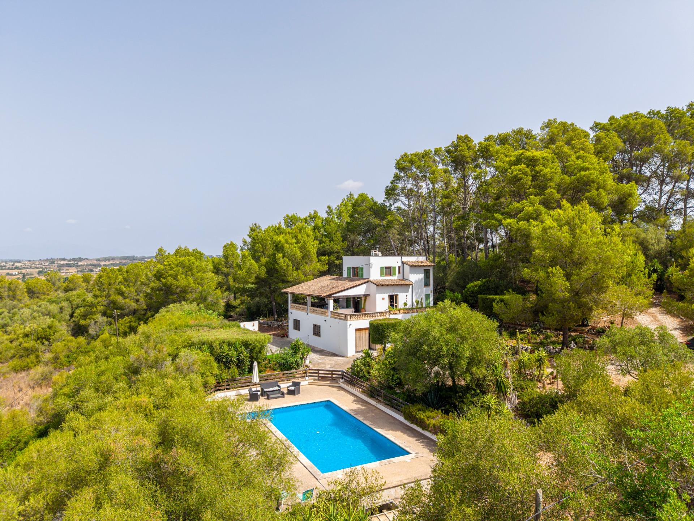

€995.000
Between Montuïri and Porreres · Mallorca · Spain
Interior Montuïri–Porreres finca reformed while keeping auténtica mallorquina charm (green shutters, wooden porch beams, stone balustrade), with a large legalized built private pool and GESA power. Habitable now, not fixer/POR/communal.
Opened 30 Sep 2026 via Gestpropiedad wp-json + apinmo gallery. Asking €995.000. Ref 04sbdl394. ~294 m² / 6.658 m² land / 3 bed / 2 bath / year 1964. Body: fully legalized including pool; lower level convertible guest apartment; BBQ; open countryside views. Not on board 60 Mallorca stock or prior Sep reject tables by ref.
View listing